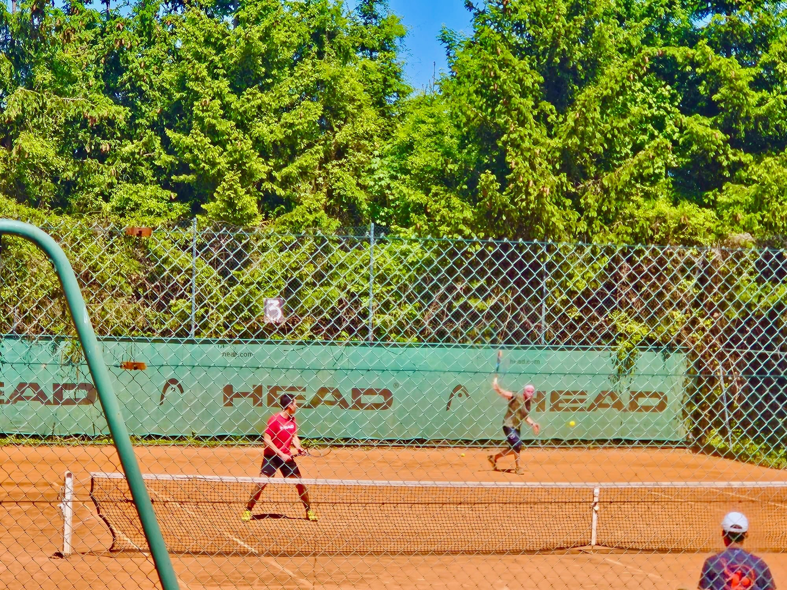
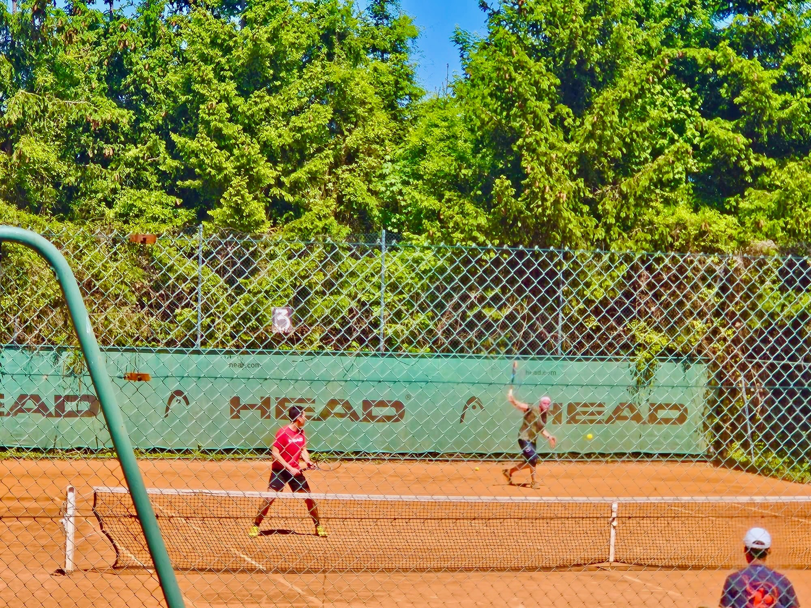

Actualités
Retour sur la 4e journée des championnats SENIORS PRINTEMPS – Dimanche 18 mai 2025
Nos équipes ont une nouvelle fois porté fièrement les couleurs du club, que ce soit à Hayange ou à l’extérieur !
Résultats :
À DOMICILE (Hayange)
• Dames 1 vs Cattenom : victoire 6-0
• Hommes 3 vs Uckange : défaite 1-4
À L’EXTÉRIEUR
• Hommes 1 à Terville : victoire 5-1
• Hommes 2 à Guentrange : victoire 5-1
• Dames 2 à Amnéville : défaite 1-4
Bravo à toutes nos équipes pour leur engagement et leur combativité sur les courts !
Un grand merci à tous ceux qui sont venus encourager nos joueurs et joueuses ce week-end.
Allez Hayange ! üéæ


Retour sur la 3e journée des championnats SENIORS PRINTEMPS – Dimanche 11 mai
Nos équipes ont encore une fois montré leur détermination sur les terrains ce week-end, à domicile comme à l’extérieur !
Résultats :
À DOMICILE (Hayange)
• Hommes 1 vs Mont St Martin : match nul 3-3
• Hommes 2 vs Trémery : match nul 3-3
• Dames 2 vs Thionville Guentrange : victoire 5-0
À L’EXTÉRIEUR
• Dames 1 à Ennery : victoire 6-0
• Hommes 3 à Algrange : défaite 0-5
Bravo à toutes nos équipes pour leur engagement et leurs performances !
Merci à tous ceux qui sont venus encourager nos joueurs et joueuses.


 

Deuxième dimanche des championnats SENIORS PRINTEMPS
De très bons résultats pour l’ensemble des équipes :
Les Hommes Hayange 1 gagnent 4/2 contre Grand Verdun à Hayange au terme d’un Double « d’enfer »
Les Hommes Hayange 2 gagnent 6/0 contre Uckange
Les Hommes Hayange 3 gagnent 5/0 contre Trémery
Les Dames Hayange 1 gagnent 6/0 contre Terville à Hayange
Les Dames Hayange 2 perdent 2/3 contre Ottange avec le regret d’un 7/10 au super tie break du double…


Tournoi 2025
Le tournoi annuel du Tennis Club de Hayange s’est déroulé dans une ambiance festive et compétitive.
Félicitations à tous les participants et aux gagnants !
Les terrains extérieurs sont prêts !
Les terrains extérieurs ont été rénovés et sont maintenant prêts à accueillir tous les membres du club.